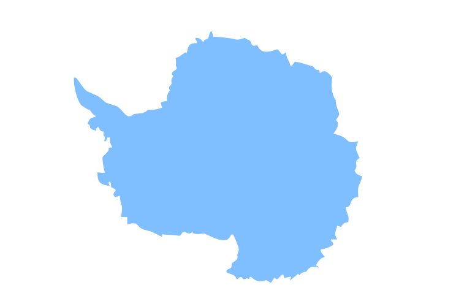
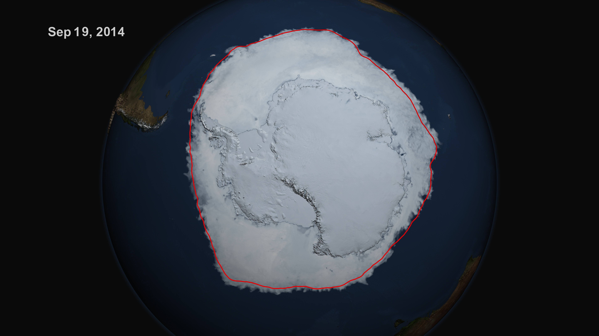
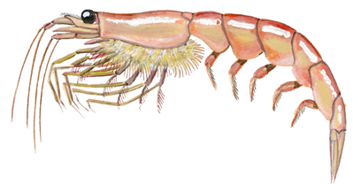
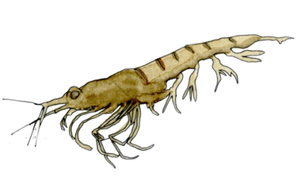
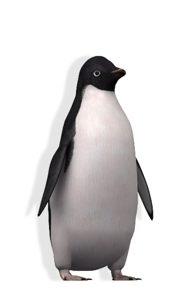
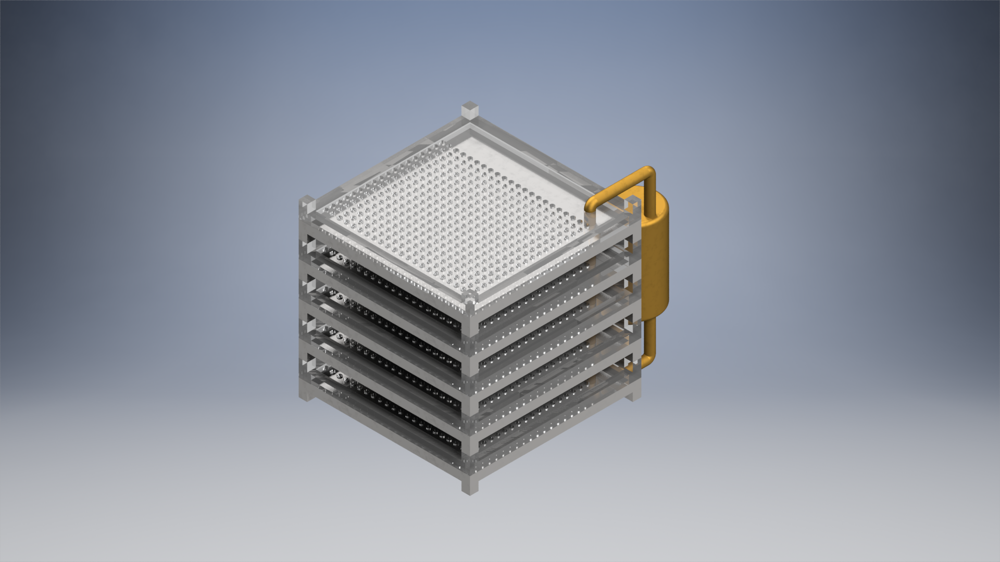
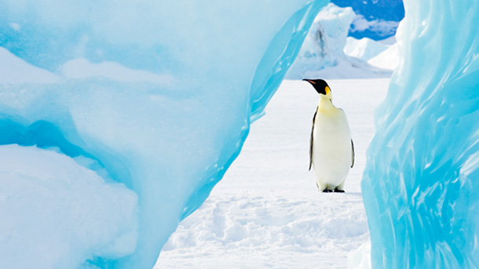
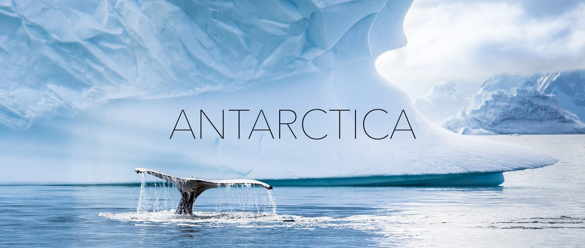

Arctic & Antarctica
It's slowly degrading, but you have time to act.
Presented by Lujing Cen and Natachi Onwudiwe
"Sea ice surrounding Antarctica reached a new record high extent this year..."
- NASA (2014)
Status Quo
0.0189
Antarctic Sea Ice (millions of km² / year)
0.0509
Arctic Sea Ice (millions of km² / year)
0.0484
Antarctic Ground Temperature (°C / year)
3.3791
Global Relative Mean Sea Level (mm / year)
133.94
Antarctic Ice Mass (GT / year)
287.62
Greenland Ice Mass (GT / year)
1.8719
Carbon Dioxide Concentration (ppm / year)
0.0636
Antarctic Ocean Temperature (°C / year)
0.0924
Arctic Ocean Temperature (°C / year)
If all of the ice from Antarctica alone were to melt, sea levels would rise 58.3 meters, covering more than 8x the height of a regular 2-story building.
Linear Projections (2100)
Arctic Sea Ice: 10.54 millions of km² 6.27 millions of km²
Ground Temperature: -54.07 °C -50.00 °C
Relative Sea Level: 69.13 mm 352.97 mm
Arctic Ocean Temperature: 7.39 °C 15.15 °C

Affected Biosphere
Phytoplankton
Krills


Penguins

Driving Change


Maximum Mitigation
Prevention Reduction Collaboration
Climate Change Mitigated (2100)
58.12
Antarctic Ground Temperature (°C)
1.6
Antarctic Ocean Temperature (°C)
0.129
Relative Ocean Level (m)
6000
Total Ice Gain (GT)

Works Cited
Antarctic Sea Ice Reaches New Record Maximum (NASA)
CU Sea Level Research Group
Earth System Research Laboratory Global Monitoring Division
Federal Program "World Ocean" Arctic Research and Investigation
IPCC AR5 (Vaughan et al, 2013)
NASA Earth Observations
National Snow & Ice Data Center